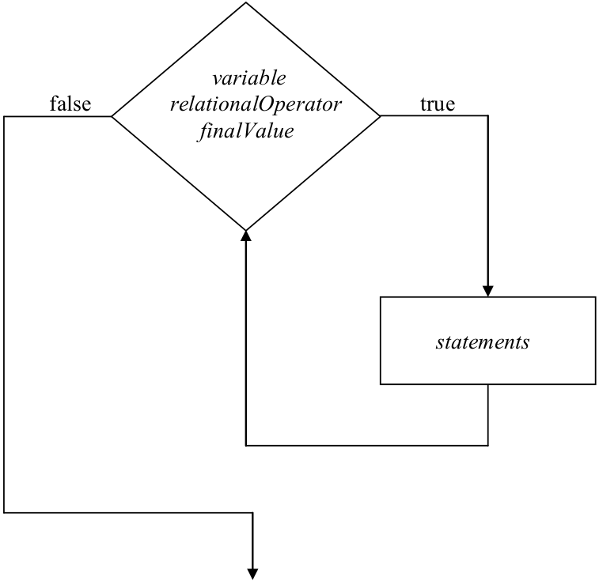
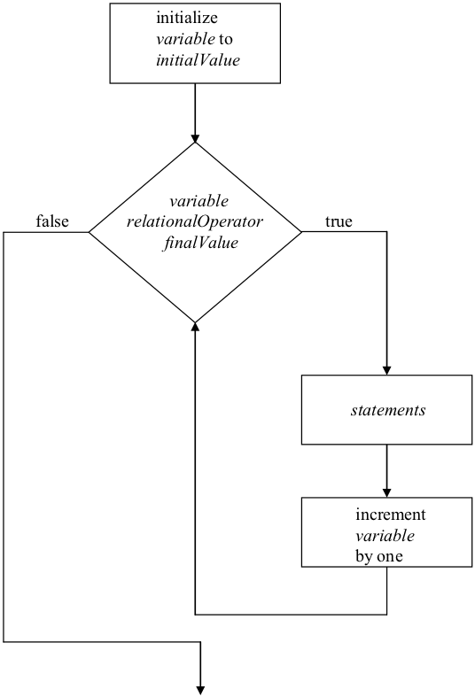

Repetition is the name given to the class of control constructs that allow computer programs to repeat a task over and over. You should already have some familiarity with this concept from your study of the Watson Graphics Language (WGL), since WGL includes a repetition construct of the form:
In these WGL “repeat” loops, counter is a positive integer constant in the range 1 to 99 that specifies the number of times the statements are to be executed. Recall that using this simple looping construct we created drawings and animations, and explored the idea of solving problems by decomposing them into repeatable “generic” steps.
Although not really touched on in the graphics chapter, there are two primary forms of repetition. These are known as iteration and recursion. For the moment, we will concentrate on iteration and defer discussion of recursion until .
Watson JavaScript supports iteration with two separate constructs: the “while” loop and the “for” loop. “While” loops are referred to as “condition-based” loops since they continue to execute the statements of the loop while its condition remains true. “For” loops are “count-based”. The “For” loops are known as a “count-based” loops because the number of times the loop statements execute is based on the value of a “loop variable” that is incremented each time through the loop. We will first look at the “while” loop and then proceed to the “for” loop.
The general format of the “While” loop is:
“While” loops work by first evaluating their Boolean_expression. If the value of the expression is false, program control immediately moves to the first statement following the closing bracket: “}”. In this case the statements in the loop body are skipped entirely. If, on the other hand, the expression evaluates to true, then the sequence of statements in the loop body is executed once. After performing the statements, control returns to the top of the loop where the Boolean_expression is once again evaluated. If the expression is still true, the statements of the loop are executed a second time. Otherwise, execution of the loop terminates and control passes to the statement following “}”. This process repeats itself until the Boolean_expression eventually becomes false and the loop exits.
An illustration of the behavior of the “while” loop iteration construct
The behavior of the “while” loop is illustrated graphically in .
contains a program that uses a “while” loop. The purpose of the program is to compute the sum of a collection of non-negative numbers to be entered by the user. The program will repeatedly ask the user to enter a number, adding each number to the total, and printing the total so far. When the user enters a –1 the program will print the final total and exit.
This program includes two variables: total, which will hold the sum of the numbers, and newValue, which will hold the input entered by the user. Execution begins by setting total to zero. Next, the user is prompted to “Enter a positive number (or –1 to quit)”. The user’s response is stored in newValue. In the run of the program illustrated in , the user entered 100.
At this point the program encounters the “while” loop, and the value that was entered by the user is compared to 0. If this value is greater than or equal to 0 the statements that form the body of the loop will be executed, if the value is less than 0 the loop will exit. Given 100 as the value of newValue, the loop statements are executed.
A program to compute the sum of an arbitrary number of non-negative numbers using a “While” loop
First, newValue is added to total. Next, the message “The total so far is… 100” is displayed. This is followed by the prompt “Enter a positive number (or –1 to quit)”. The user’s response to this prompt, which is 50 in the example run of , is stored into newValue and control returns to the top of the loop.
The value of the variable newValue is once again compared to 0. Since newValue contains a 50, which is greater than or equal to 0, execution of the loop continues. The 50 is added to total. The message “The total so far is… 150” is displayed, and the next input prompt generated.
In the run of the program shown in the user enters a –1 at this point. The user’s input is stored into newValue and control again returns to the top of the loop. Since the Boolean expression, “newValue >= 0”, would now evaluate to false, execution of the loop terminates and control moves to the “write” and “writeln” statements following the loop. These statements report the final total of 150, and program execution halts.
It is interesting to note that although the program instructs users to enter “–1 to quit”, the condition that controls the loop is actually “newValue >= 0” which will be false for any negative number. Thus, the loop will actually terminate whenever the user enters any number less than zero, such as –5.
While the program of works well for computing the total of a collection of non-negative numbers, it suffers from the limitation that it does not work for all numbers: positive, negative, and zero. The reason for this limitation is that the program depends on a ‘sentinel’, in this case a negative number, to determine when the main loop should be terminated – and therefore when the program should stop asking for additional numbers and report the final total.
A program to compute the sum of N numbers using a “while” loop
One way around this issue, is to modify the program of so that it first asks the user how many numbers are to be added together, and then uses that number to control how many times the main loop is to repeated. Such a program, which computes the sum of N numbers (positive, negative, or zero) using a “while” loop is given in .
In many ways, the programs of and are quite similar. They use the variables total and newValue in the same way. They both prompt the user to enter numbers each time through the loop, print running totals, and a final total at the end. However, there are significant differences between these two programs as well.
The program of contains four variables: n, total, counter, and newValue. The variable n is used to hold the number of values to be summed. total holds the sum of the numbers that have been added together so far. counter is the loop variable – it keeps up with which iteration of the loop is currently being executed. Finally, newValue is used to receive each number entered by the user.
After declaring the variables, the program begins execution by prompting the user for the number of values to be summed. The user’s input is captured and stored in the variable n. In the sample run of the program given in , the user entered 2 at this point – indicating that two numbers are to be summed. Next, the variable total is set equal to 0. This is done to reflect the fact that, at the moment, the total of all of the numbers the program has added together is zero.
The program now prepares itself to enter the main loop, which will control the prompting of input and addition of numbers. During this portion of the program, the variable counter will mark how many times the loop has been executed, while the variable n keeps up with the total number of times we desire the loop to be executed.
The variable counter is now set to 1. This action is taken to record the fact that the program is about to enter the main loop for the first time. The program now encounters the “while” loop. The variable counter is compared to n, and the loop statements are executed if the counter is less than or equal to n. Since n holds the value 2 at the moment, while counter holds the value 1, counter is currently less than or equal to n, so the body of the loop is executed.
The first two loop statements display the message “The total so far is… 0”. The third line prompts the user to “Enter a number to add to the total.” and stores the user’s input into newValue. The next line in the body of the loop adds newValue to the total for far. Assuming the user enters 100 for newValue, as is the case in the example of , total would now contain 100, since 0 + 100 = 100. The last action to take place during the first pass through the loop is for 1 to be added to counter, giving it a value of 2. Control then returns to the top of the loop.
The current value of counter, 2, is compared to the current value of n, which is also 2. Since 2 is less than or equal to 2, the second pass through the loop begins. Lines one and two generate “The total so far is… 100”. Line three prints its prompt and stores the user’s input into newValue, which in line four is added to total. Given 50 as the user’s input, total would be set to 150, since 100 + 50 = 150. The variable counter is then incremented by 1, giving it a value of 3, and control returns to the top of the loop.
Since the current value of counter, 3, is greater than n, 2, execution of the loop terminates and control passes to the statement following the loop’s closing bracket, “}”. This statement and the next display the message “The final total is… 150”. The end of the program is then encountered and its execution ceases.
The program of can be simplified somewhat by replacing its “while” loop with a “for” loop. A “for” loop is a specialized iteration construct that implements count-based loops. The “for” loop combines into a single statement, loop variable initialization, the loop condition test, and the loop variable increment operation. Each of these operations are highlighted with arrows in .
The general format of the “for” loop is:
“For” loops work in the following way. First a numeric “loop variable”, indicated above by variable, is initialized to the value of initialValue. The value of the loop variable is then compared to the value of finalValue using the relationalOperator. If the expression variable relationalOperator finalValue is true, the statements of the loop are executed. However, if the result of the expression is false, program control immediately moves to the first statement following the loop’s closing bracket, “}”skipping over the statements in this case. Assuming the expression is true, after executing the statements, the loop variable will be automatically incremented by one and control will return to the top of the loop where the value of the loop variable will once again be compared to the value of finalValue.
If the result of the expression variable relationalOperator finalValue is no longer true, execution of the loop terminates and control passes to the statement following the closing bracket, “}”. Otherwise, the statements of the loop are executed a second time. This process repeats itself until the loop expression eventually becomes false, at which point the loop terminates.
The behavior of the “for” loop is illustrated in . While certainly not always the case, the initialValue is often set at 1 and the relationalOperator is set to “<=”. Under these circumstances, finalValue would specify the number of times the loop would be executed, while variable counts off each iteration of the loop: 1, 2, 3, … finalValue. Thus, during loop execution, variable will always indicate which iteration is currently being processed.
An illustration of the behavior of the “For” loop iteration construct
illustrates a “for” loop in action. The program of is simply the program of rewritten to use a “for” instead of a “while”. Notice that each of the statements marked with arrows in have been “collapsed” into the “for” construct in . Namely, it is no longer necessary to initialize counter to 1 in a separate statement prior to entering the loop, nor is it necessary to increment counter by 1 at the bottom of the loop. These actions are now performed automatically by the “for” loop.
A program to compute the sum of N numbers using a “For” loop
Use of the “for” construct to implement count-based loops is preferable to implementing such loops using “while”. “For” loops are convenient from the programmer’s point of view, since they combine three statements: initialization, test, and increment, into one statement. They also increase the clarity of the program by telling the reader, up front, that the loop that is being entered is count-based.
“For” loops eliminate a common source of errors. When implementing a count-based loop using a “while” construct, as in the program of , the programmer must be careful to ensure that the last action in the body of the loop is an increment of the loop variable. If the programmer accidentally omits this increment statement, the condition controlling the loop will never become false and thus the loop will never terminate. In the program of , counter would always be 1, so if the test counter <= n was true when the loop was first entered, it will always be true – and the loop will never exit.
When a program attempts to execute one of these so-called infinite loops, it gets “caught” in the loop. All that can be done at that point is to “kill” the offending program by issuing an operating system level command, such as Control-Alt-Delete in Windows.
It is important to recognize that although “for” loops are quite convenient, they are not strictly necessary, since every program incorporating a “for” loop could always be rewritten using a “while” loop.
A program to average grades using a “For” loop and an “If-Else” construct
Is the opposite true? Can every program that uses a “while” be rewritten using “for”? The answer is “no”. “For” loops are based on counting from some value to some other value. A “for” loop could not be used to implement the program of since the loop in that program does not execute some fixed number of times. Instead, it repeats over and over until the user types in a value of –1. That might be the first input or it might be the hundredth or the ten thousandth. There is no way to tell.
Because “for” loops can always be replaced with “while” loops, but not all “while” loops can be replaced with “for” loops, we say that the “while” loop is “more general” than the “for”.
The next program we will examine incorporates both a “for” loop and an “if-else” statement in order to compute the average of a set of grades. The program, presented in , computes the average of a collection of grades entered by the user.
Much of the program is similar to the one presented in . It gets from the user the numberOfGrades to be averaged, sets the total to zero, and then enters a loop that asks for, receives, and adds to the total each grade entered by the user. As grades are entered, they are “echoed” to the screen using “write” and “writeln” statements. Once the final grade has been added to the total the loop exits and the average can be computed and reported.
There is, however, one potential snag in the above scenario. If 0 were entered by the user as the numberOfGrades, then average would be undefined. In fact, attempting to compute average as total divided by numberOfGrades would result in a divide-by-zero error. To overcome this potential problem, the program verifies that numberOfGrades is greater than 0 before performing the division. If it is less than or equal to zero, then the string “undefined.” is printed instead of the value of average.
Two separate runs of the program are illustrated in . In the first run, there are three grades to be averaged: 100, 50, and 90, giving a result of 80. In the second run, the user enters 0 for the numberOfGrades. Since the initial value of loop variable i, 1, is greater than zero, the statements in the body of the loop are skipped. As a result, the program never requests the user to enter any grades and total remains at zero. When the “if-else” statement is encountered the ‘average’ will be reported as “undefined.”.
One final point worth making about the program of is that it will work correctly even if the user accidentally enters a negative value for numberOfGrades. In this case, the statements in the body of the loop will be skipped and the “If” condition will be false, so the message “The average of the grades is undefined.” will be generated.
One limitation of this program, and many other programs that use count-based loops to control user input, is that they are critically dependent on being given the correct number of input items at the beginning of the program. If the count of the number of items to be input is off, the program will either ask for too few items or for too many. Either way, users would find such behavior quite frustrating. This limitation cannot be easily overcome without abandoning the count-based approach.
Thus, while the program of may be useful for averaging a handful of grades, in reality, no one would be willing to use the program to compute the average of a long list of grades. The reason for this is that in order to use the program, the user must first count how many grades are in the list. If he or she makes a mistake while counting, the user won’t discover this until either the program fails to ask grade or asks for one when no more are available.
All is not lost however, since the program of could be modified to use the sentinel-based, while loop approach of for reading its input. Under this approach, the program would ask for grades until a negative number were entered, instead of requiring the user to enter the number of grades up front.
Before leaving the topic of iteration, we should say a few words about the idea of “nested loops”. Two loops are “nested” when one loop appears within the body of another loop. Since there are no restrictions as to what statements can appear within the body of a loop, a “for” or “while” can certainly appear within the body of another “for” or “while”. Nesting of loops is quite common, and in fact may be carried out to an arbitrary depth. (However, to keep the logic of a program from becoming too hard to follow, programmers try to limit nesting depths to no more than three or four levels deep.)
presents a compact little program for printing the multiplication table. A partial listing of the program’s output is included in the figure. This program consists of two nested “for” loops. The loop variable of the outer loop is i and the loop variable for the inner loop is j. Both of these loops count from one to twelve.
The program’s output is of the form:
i times j equals x
where i and j represent the values of the respective variables and x is their product. Notice from the partial listing of the output in that j runs through its entire range, from 1 to 12, before i is incremented by 1. This behavior is easy to understand when you think about the structure of the program.
Let’s look at the outer loop. What does it do? Well, first i is initialized to 1, it is then compared to 12, and since it is not greater, the first iteration of the loop commences. The first statement of the loop prints out a blank line. The next “statement” is a loop construct. In order for the first iteration of the outer loop to complete, the program must execute this inner loop to completion.
A program that prints the multiplication table using nested “For” loops.
The inner loop begins by initializing j to 1. Since 1 is not greater than 12, the first pass through the inner loop begins. The first statement of this loop computes the product of i and j. Since they are both 1, their product is 1. Next, the following four items are printed on a single line: the current value of i, the string “ times ”, the current value of j, and the string “ equals ”. These are followed by the current value of product and a new line character. Thus the string “1 times 1 equals 1” is generated. The first pass of the inner loop ends with j being incremented from 1 to 2 and control returning to the top of that loop.
Each pass through the inner loop proceeds in a similar fashion, with i remaining constant and j being bumped up by one each time. So, during the second pass “1 times 2 equals 2” is printed, during the third “1 times 3 equals 3” is display, and so forth. Eventually, j reaches 12 and “1 times 12 equals 12” is output. j is then incremented to 13 and control returns to the top of the inner loop. Since 13 is greater than 12 the inner loop completes.
Execution of the first pass through the outer loop can now resume. Since the inner loop was the last “statement” of the outer loop, the loop variable i is incremented by 1, to 2, and control returns to the top of the outer loop.
The current value of i, 2, is not greater than 12, so the second pass through the outer loop begins. The first statement generates a blank line, as it did during the first pass through the loop. Next, the inner loop is encountered and its execution starts afresh. j is initialized to 1. Since that value is less than 12 the statements of the loop are executed and the string “2 times 1 equals 2” is printed. Subsequent passes through the inner loop produce “2 times 2 equals 4”, “2 times 3 equals 6”, etc. Eventually, of course, the inner loop will again complete and the third pass of the outer loop can begin.
This process repeats itself until all 144 entries in the multiplication table, from 1 × 1 to 12 × 12, are computed and printed.
We conclude this section on iteration with the program of . This program prints the lyrics to the song “99 Bottles of Beer on the Wall”. As you most likely know, the song begins:
Beer – the iterative version
It continues in this manner, with one less bottle in each verse, until it finally runs out of beer. Actually, instead of beginning the song at 99 bottles, the program of asks the user to enter the number of bottles.
An interesting feature of the program is that it decrements count in the middle of the loop, rather than at the end. You should trace through the program with a few bottles to convince yourself that it does work properly. One thing you will probably notice as you do so is that when the program gets down to one beer it reports that as “1 bottles of beer on the wall.” While this lack of grammatical correctness might not seem like such a big deal, especially after 98 beers, I’ll ask you to correct it in the exercises.
Exercises for
Modify the program of so that both negative and positive numbers can be added together. In order to do so and still have a way to exit the loop, use 0 as the exit sentinel.
Rewrite the program of so that it uses a “while” loop to read in grades until a negative grade is entered, instead of using a “for” loop that requires the user to enter the number of grades in advance.
Modify the program of so that it correctly handles one bottle of beer. In other words, it should say “1 bottle of beer on the wall.” Instead of “1 bottles of beer…”
Rewrite the program of so that it uses a “For” loop instead of “While” loop. Note that “For” loops count “up” while the song counts “down”.